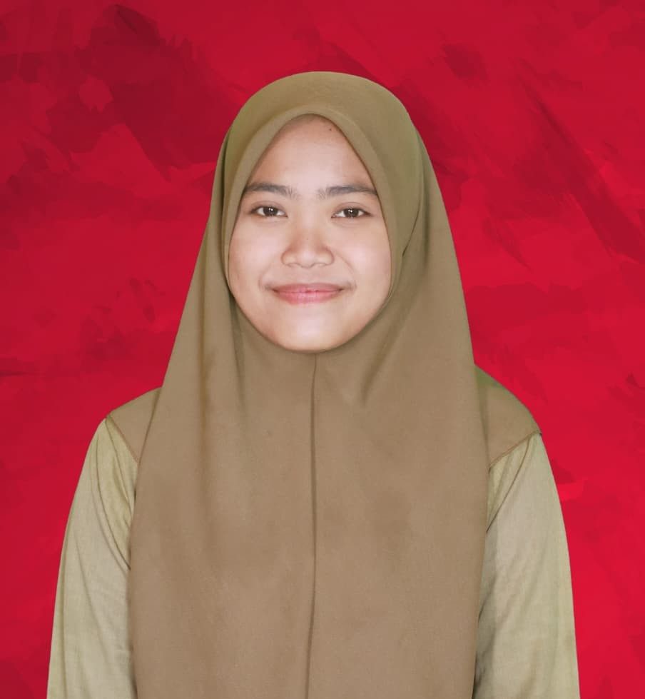
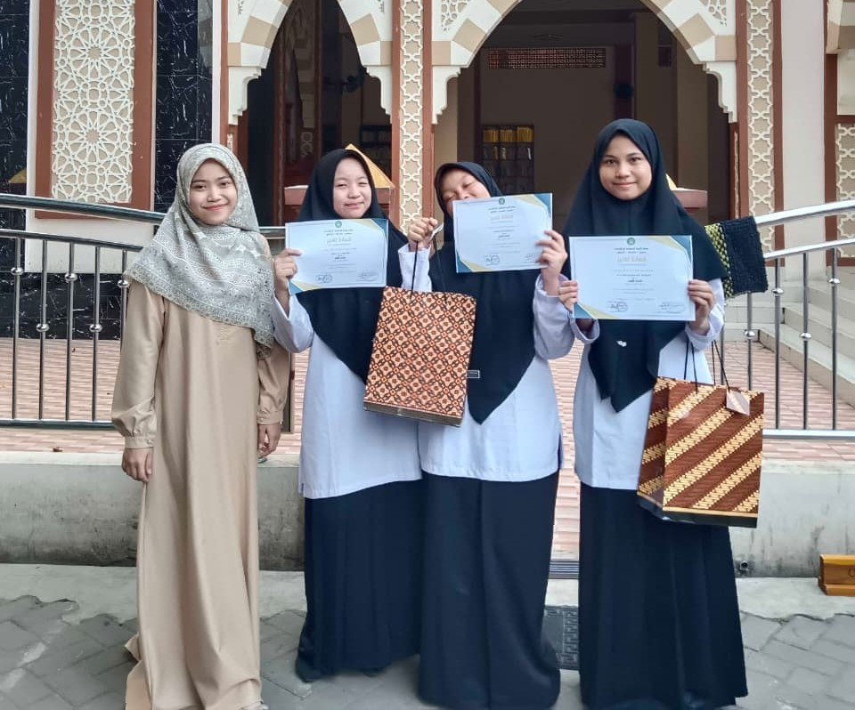

Saya mahasiswi dari Unpam Serang, yang juga memiliki pengalaman di bidang administrasi pondok pesantren. Pernah menangani administrasi pembayaran SPP, laundry, pengelolaan data santri, dan dipercaya sebagai wali kelas. Pengalaman tersebut membentuk saya menjadi pribadi yang teliti, bertanggung jawab, dan terorganisir.
Mari BerkolaborasiMengelola pembayaran SPP santri/bulan dengan akurasi 100%, laporan keuangan real-time, rekonsiliasi pembayaran.
Mengkoordinasi laundry santri/minggu, manajemen inventaris, jadwal distribusi, quality control.
Mengelola database lengkap santri via Excel/Google Sheets, update real-time, backup otomatis, reporting.
Administrasi 32 santri, koordinasi guru & orang tua, monitoring akademik & perilaku, laporan bulanan.
Menguasai administrasi lengkap pondok pesantren dengan pengalaman real. Teliti dalam data entry, efisien dalam pelaporan, dan handal dalam koordinasi tim besar.
Akurasi 100% dalam administrasi pembayaran SPP selama 3 tahun berturut-turut.

Dipercaya menjadi wali kelas dengan hasil prestasi kelas.
Mengelola sistem database santri yang efisien digunakan seluruh staf.
Optimasi proses laundry hingga 40% lebih efisien dan tepat waktu.
Saya siap untuk kesempatan baru di bidang administrasi profesional. Mari diskusikan bagaimana saya bisa berkontribusi untuk organisasi Anda!